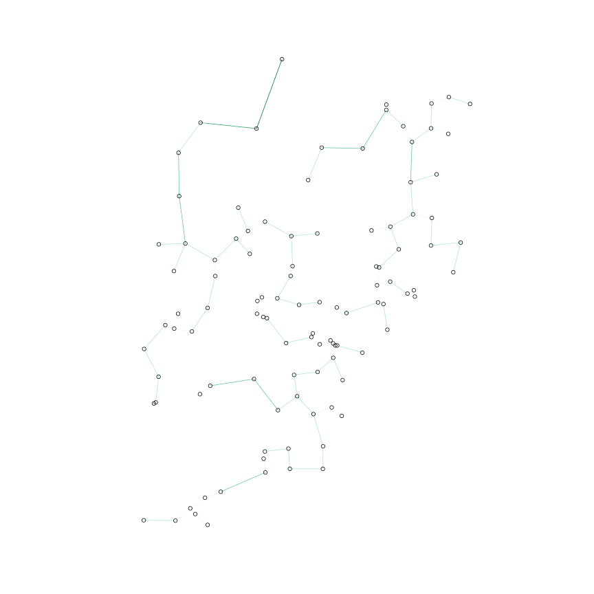

This example is related to the networkplanner library and uses minor functions from it, but is more broad than the library as it demonstrates the utility of igraph and SP packages as well.
Load point dataset from csv and map it. These points represent households clustered in several villages.
require(sp)
require(methods)
require(RColorBrewer)
csv_file <- "../inst/test_data/mmr_hh_spatial.csv"
hh_df <- read.csv(csv_file)
mapping_from <- c("household._gps_longitude",
"household._gps_latitude",
"Household_geocharacterization.hh_size",
"Household_geocharacterization.hh_rooms")
mapping_to <- c("X", "Y", "hh_size", "hh_rooms")
hh_df[,mapping_to] <- hh_df[,mapping_from]
hh_df <- hh_df[,mapping_to]
# transform the points and hh_size from factors to numerics
unfactor_hh_size <- function(hh_size) {
hh_size_num <- suppressWarnings(as.numeric(levels(hh_size)))
hh_size_num[hh_size]
}
hh_df <- transform(hh_df, hh_size=unfactor_hh_size(hh_size),
X=as.numeric(levels(X))[X],
Y=as.numeric(levels(Y))[Y])
hh_sp_df <- hh_df
coordinates(hh_sp_df) <- ~X + Y
# and set the projection
proj <- "+proj=longlat +datum=WGS84 +ellps=WGS84"
hh_sp_df@proj4string <- CRS(proj)
# simple plot of points (colored by hh_size)
hh_classes <- with(hh_df, seq(min(hh_size, na.rm=T), max(hh_size, na.rm=T), len=5))
color_indices <- findInterval(hh_df$hh_size, hh_classes)
colors <- brewer.pal(5, "BuGn")[color_indices]
colors[is.na(colors)] <- "#FFFFFF"
plot(hh_sp_df, pch=21, col="#000000", bg=colors, lwd=0.2)
As a first pass at an LV network, calculate the MST connecting all points via igraph and plot the graph.
require(igraph)
require(geosphere)
# create the full graph
edge_df <- data.frame(t(combn(1:nrow(hh_sp_df), 2)))
names(edge_df) <- c("from", "to")
# assign distances and create graph
edge_df$weight <- distHaversine(hh_sp_df[edge_df$from,], hh_sp_df[edge_df$to,])
g <- graph.data.frame(edge_df, directed=F)
# compute the MST
mst_g <- minimum.spanning.tree(g)
plot(mst_g, vertex.size=4, vertex.label="")
Calculate mean edge length and costs associated with the MST based network
network_span <- sum(E(mst_g)$weight)
# sum of distances between edges / num edges
mean_edge_len <- network_span/length(E(mst_g))
# assign costs to grid components
LV_POLE_DIST_M <- 50
LV_POLE_COST_D <- 150
LV_COST_PER_M_D <- 15
MV_TO_LV_XFRM_COST_D <- 10000
LV_SURVEY_COST_PER_M_D <- 0.0025
# edge cost function
edge_cost <- function(distance) {
pole_cost <- (distance / LV_POLE_DIST_M) * LV_POLE_COST_D
lv_cost <- distance * LV_COST_PER_M_D
survey_cost <- distance * LV_SURVEY_COST_PER_M_D
pole_cost + lv_cost + survey_cost
}
# order edges in desc length order
mst_edge_df <- get.data.frame(mst_g, what="edges")
mst_edge_df <- mst_edge_df[order(-mst_edge_df$weight),]
mst_edge_df <- transform(mst_edge_df, lv_cost=edge_cost(weight))
# assign costs to edges
E(mst_g)$lv_cost <- edge_cost(E(mst_g)$weight)
num_transformers <- 1
mst_based_cost <- sum(mst_edge_df$lv_cost) + (num_transformers * MV_TO_LV_XFRM_COST_D)
# summarize
cat("mean edge length (meters): ", mean_edge_len, "\n")
## mean edge length (meters): 473.1
cat("mst based cost (dollars): ", mst_based_cost, "\n")
## mst based cost (dollars): 2939840
Construct the NetworkPlan from the MST based graph and map it. The map looks simple at this zoom level, but the village subnets are quite detailed.
# map points to vertices in graph
require(networkplanner)
np <- create_networkplan_from_graph(mst_g, hh_df, proj)
# get spatial dataframes to map
sp_dfs <- as_spatial_dataframes(np)
edge_sp_df <- sp_dfs$edges
plot(edge_sp_df)
Reduce costs by substituting lower cost transformers for expensive edges. Mean edge length and cost of the network are reduced significantly.
# find the 'expensive' edges and remove 'em in favor of transformers
expensive_edge_df <- mst_edge_df[mst_edge_df$lv_cost > MV_TO_LV_XFRM_COST_D,]
reduced_mst_g <- mst_g
reduced_mst_g[from=expensive_edge_df$from, to=expensive_edge_df$to] <- F
num_transformers <- num_transformers + nrow(expensive_edge_df)
reduced_network_span <- sum(E(reduced_mst_g)$weight)
# sum of distances between edges / num edges
reduced_mean_edge_len <- reduced_network_span/length(E(reduced_mst_g))
reduced_mst_based_cost <- sum(E(reduced_mst_g)$lv_cost) + (num_transformers * MV_TO_LV_XFRM_COST_D)
# summarize
cat("reduced mean edge length (meters): ", reduced_mean_edge_len, "\n")
## reduced mean edge length (meters): 22.97
cat("reduced mst based cost (dollars): ", reduced_mst_based_cost, "\n")
## reduced mst based cost (dollars): 219386
Construct the Reduced NetworkPlan and map it on top of the MST based map. Note the reduced network in red.
# map points to vertices in graph
reduced_np <- create_networkplan_from_graph(reduced_mst_g, hh_df, proj)
# get spatial dataframes to map
reduced_sp_dfs <- as_spatial_dataframes(reduced_np)
reduced_edge_sp_df <- reduced_sp_dfs$edges
plot(edge_sp_df)
lines(reduced_edge_sp_df, col="red")
Decompose the reduced network into its connected components and map the largest component
components <- decompose.graph(reduced_mst_g)
component_sizes <- sapply(components, function(g) { length(E(g)) })
largest_component <- components[[which(component_sizes==max(component_sizes))]]
# map points to vertices in graph
np <- create_networkplan_from_graph(largest_component, hh_df, proj)
# get spatial dataframes to map
sp_dfs <- as_spatial_dataframes(np)
edge_sp_df <- sp_dfs$edges
dist_classes <- with(edge_sp_df@data, seq(min(lv_cost), max(lv_cost), len=5))
color_indices <- findInterval(edge_sp_df@data$lv_cost, dist_classes)
colors <- brewer.pal(5, "BuGn")[color_indices]
plot(edge_sp_df, col=colors)
points(hh_sp_df)
